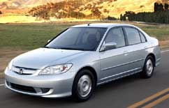

At the heart of every hybrid is the tandem of aninternal-combustion engine (powered by gasoline) and an electricmotor (powered by batteries). In conventional vehicles, automakerssize gas engines to provide enough power for peak acceleration, butthat level of power isn't needed most of the time. The addition ofan electric motor allows for a smaller gas engine that uses lessfuel and can run more often at its peak efficiency.
In most hybrids, when the vehicle idles, the gas engine shuts offand the electric motor is the sole source of power. The electricmotor also powers the hybrid at low speeds and supplements the gasengine with extra oomph when the driver acceleratesquickly.
To recharge their batteries, hybrids capture kinetic energy as thevehicle slows down, a process called regenerative braking. Inconventional vehicles, this energy is lost as heat when brakesapply friction. But in hybrids, the electric motor helps slow thecar and transfers some of the kinetic energy to the batteries,which store the power for future use. Hybrids' conventional brakeskick in when needed, such as with sudden stops. Because hybridsrecharge themselves, there's no need to plug them into anelectrical outlet overnight.
|
 The Honda Civic Hybrid achieves is rate dat 46 miles per gallon (mpg) in city driving and 51 mpg highway driving. |
|
|